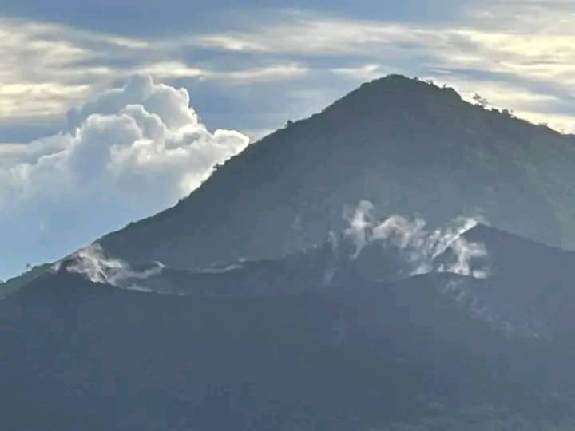

September 19, 1994. I was just a child when the earth beneath my feet began to tremble. The sky, once a brilliant blue over our beloved Rabaul town, turned black as night. Ash fell like rain. And from the harbor, two ancient giants awakened from their long slumber.
Vulcan and Tavurvur—twin volcanoes that had watched over the Gazelle Peninsula for millennia—erupted simultaneously. It was the day our world changed forever.
Today, more than three decades later, I want to share the story of that day. Not just the facts and figures, but the human story. The fear. The courage. The loss. And ultimately, the resilience of a people who refused to be buried by ash.

Before the Storm: Rabaul's Golden Era
To understand what was lost, you need to know what Rabaul was before 1994. It was a town unlike any other in Papua New Guinea—a place where history and natural beauty collided.
Rabaul sat within a flooded volcanic caldera, one of the most spectacular natural harbors in the world. The town was built on the ashes of previous eruptions, its streets lined with colonial-era buildings, its markets bustling with traders from across the islands. It was the commercial heart of East New Britain, a center of commerce, culture, and community.
My father used to tell me stories about Rabaul in its heyday. He spoke of the wharves crowded with ships, the cinemas showing the latest films, the clubs where people danced until dawn. He spoke of the botanical gardens, lush and green, and the golf course that stretched along the harbor. He spoke of a town alive with possibility.
But Rabaul's beauty came with a warning. The volcanoes that surrounded it—Tavurvur, Vulcan, Rabalanakaia—were not dormant. They were sleeping. And anyone who knew the history of this place knew that they would wake again.
The last major eruption had been in 1937, when Tavurvur and Vulcan had erupted together, killing over 500 people. The memory of that disaster was still alive in the community. People watched the volcanoes. They listened to the rumbling. They knew, in their bones, that the mountains could not sleep forever.
The Warning Signs
In the months before September 1994, the earth began to stir. Seismologists from the Rabaul Volcanological Observatory—a world-class facility perched on the ridge overlooking the harbor—recorded increasing seismic activity. The ground swelled. Cracks appeared in roads. Buildings creaked and groaned.
I remember the earth moving beneath my feet. It wasn't like the earthquakes I'd felt before—quick jolts that left as fast as they came. This was different. It was a constant, low rumble, like the breathing of some great beast beneath us. Some days, the ground would shake so hard that dishes rattled in cupboards and pictures fell from walls.
The scientists at the observatory worked around the clock. They knew what the signs meant. The volcanoes were waking up. They issued warnings, raised alert levels, urged the government to prepare. But how do you prepare for the end of the world?
Some people left. They packed what they could and moved to Kokopo, to the plantations, to relatives in distant villages. But many stayed. Rabaul was home. Where else would they go?
My family stayed. My father said the volcanoes had been sleeping for fifty-seven years. He said they'd sleep another fifty-seven. He was wrong.
The Eruption Begins
In the early hours of September 19, 1994, the earth erupted. Not with a bang, but with a roar that seemed to come from everywhere and nowhere at once. I was woken by the sound—a deep, guttural thunder that shook the walls and rattled the windows. The sky outside was glowing orange.
We ran outside. The sight I saw is burned into my memory forever. Tavurvur, the great volcano that dominated the eastern edge of the harbor, was vomiting fire and ash into the night sky. A column of smoke rose miles high, lit from within by lightning. Ash was already falling, covering the streets in a fine gray powder.
But it was the other direction that held the greatest terror. Across the harbor, on the western side of the caldera, Vulcan was also erupting. The twin volcanoes had awakened together, just as they had in 1937.
My father grabbed my hand. "We have to go," he said. "Now."
We ran. Around us, the town was chaos. People were screaming, crying, praying. Cars honked and swerved. The ash was falling thicker now, turning day into night. The air was thick with sulfur, burning our lungs, stinging our eyes.
We made it to a truck that was heading out of town. People were packed into the back like sardines, holding each other, crying, praying. The driver, a man I'd never met, pulled us in. "Hold on," he said. "We're getting out."
As we drove away, I looked back at Rabaul. The town I'd known my whole life was disappearing beneath a blanket of ash. The volcanoes towered above, their peaks hidden by smoke, their bellies glowing red. It was terrifying. It was magnificent. It was the end of an era.
Survival and Loss
The evacuation saved countless lives. In the days before the eruption, the Rabaul Volcanological Observatory had worked with provincial authorities to prepare evacuation plans. When the eruption began, those plans were put into action.
Thousands of people fled Rabaul that day. They went to Kokopo, to the plantations, to villages scattered across the Gazelle Peninsula. They went with whatever they could carry—a bag of clothes, a photo album, a Bible, a cooking pot. They left behind their homes, their businesses, their memories.
Miraculously, only five people died in the eruption. Five lives lost. Five families shattered. But compared to the 1937 eruption, which had killed over 500 people, the toll was almost unbelievably low. The scientists at the observatory were heroes. The community's willingness to evacuate saved thousands.
But the losses were still immense. The town of Rabaul was destroyed. Not by lava, which flowed harmlessly into the harbor, but by ash. Ash piled feet deep on every street. Ash collapsed roofs and crushed buildings. Ash turned the lush green landscape into a gray, lifeless desert.
The colonial-era buildings—the ones that had survived wars and earthquakes and the passage of time—were buried. The markets, the cinemas, the clubs, the churches—all gone. The harbor, once one of the most beautiful in the world, was choked with pumice and ash.
When we returned weeks later, I didn't recognize the place. The streets were unrecognizable. The landmarks were gone. The house I'd grown up in was buried to the roof. All that was left was the cross on top of the church, poking through the gray.
Rising from the Ashes
For weeks, months, years after the eruption, the people of East New Britain faced an impossible question: what now? The town of Rabaul was gone. The businesses were gone. The infrastructure was gone. How do you rebuild when everything you knew has been buried?
Slowly, painfully, the community began to answer that question. The government designated Kokopo as the new provincial capital. New buildings rose from the ground. New roads were built. New businesses opened. A new town was born.
But for those of us who had lived through the eruption, the scars remained. We carried the memory of that day with us. The sound of the earth roaring. The feel of ash on our skin. The sight of our homes disappearing beneath the gray.
Some people never returned. They moved to other provinces, other countries, started new lives far from the volcanoes that had taken everything. Others returned to the land of their ancestors, determined to rebuild, to replant, to reclaim what was lost.
My family stayed. My father found work in Kokopo. My mother started a small market stall, selling vegetables from our garden. We built a new life on the ashes of the old one. It wasn't easy. But we were Tolai. We were strong. We would not be defeated.
Tavurvur Today: A Sleeping Giant
Today, Tavurvur still looms over Rabaul harbor, a constant reminder of the power that lies beneath our feet. It has erupted several times since 1994—most recently in 2014, when it sent ash plumes miles into the sky and caused evacuations in the surrounding area. But those eruptions were small compared to the cataclysm of 1994.
The volcano has become a symbol of our resilience. Tourists come from around the world to see it, to hike to its rim, to stand on its flanks and feel the heat radiating from its depths. They come to witness the power of nature. But for us, Tavurvur is something more. It is a reminder of what we lost. It is a monument to what we survived. It is a testament to our strength.
When I guide visitors to the Rabaul Volcanological Observatory or the Malmaluan Lookout, I look at Tavurvur and I remember. I remember the night the earth roared. I remember the ash falling like rain. I remember running, holding my father's hand, not knowing if we would survive.
And then I look at the people around me. The families who rebuilt. The businesses that reopened. The town that rose from the ashes. And I know that we survived. We thrived. We are still here.
Lessons from the Ashes
The 1994 eruption taught us many things. It taught us about the power of science—the scientists at the Rabaul Volcanological Observatory saved thousands of lives. It taught us about the importance of community—neighbors helping neighbors, strangers pulling together, a people united in the face of disaster.
It taught us about resilience. The people of East New Britain lost everything, but they refused to lose hope. They built new homes, new businesses, new lives. They transformed tragedy into opportunity. They showed the world what it means to be Tolai, to be Papua New Guinean, to be human.
And it taught us about the fragility of the places we call home. Rabaul was a town built on a volcano. It was always at risk. But that risk was part of its beauty, part of its character, part of what made it special. The people who lived there knew the danger. They accepted it. They loved the place anyway.
That's the lesson I carry with me today. We cannot control the forces of nature. We cannot prevent the earth from shaking or the volcanoes from erupting. But we can choose how we respond. We can choose to run, to rebuild, to rise from the ashes. We can choose hope over despair. We can choose life.
Visiting Tavurvur Today
If you come to East New Britain, I hope you'll take the time to visit Tavurvur. Not just to see the volcano, but to understand what it means to this place and its people. Visit the Rabaul Volcanological Observatory, where scientists watch the mountain day and night. Walk through the streets of Rabaul, where the ash has been cleared but the memories remain. Stand on the shores of Simpson Harbour and look up at the mountain that changed our lives.
And when you do, I hope you'll think about resilience. About the people who rebuilt from nothing. About the community that refused to be defeated. About the power of hope, even in the face of disaster.
Because that's what Tavurvur represents to me. Not destruction, but rebirth. Not loss, but renewal. Not the end, but the beginning.
A Final Reflection
It has been more than thirty years since the earth roared and Rabaul disappeared beneath the ash. The children who ran from the volcano that day are adults now, with children of their own. The parents who carried them to safety are grandparents, their faces lined with years, their eyes still holding the memory of that morning.
I think about my father, who insisted we would stay, who said the volcanoes would sleep. I think about the truck driver who pulled us in, who drove us to safety. I think about the scientists who watched the mountain, who warned us, who saved us. I think about the people who lost everything, and the people who helped them rebuild.
I think about the town beneath the ash. The streets I played in. The market where my mother sold her vegetables. The church where we prayed. They are still there, buried, waiting. Someday, maybe, someone will dig them up. Maybe they will find the Rabaul that was lost. Maybe they will remember.
But for now, I look at Tavurvur and I see something else. I see a mountain that has been here for millennia, that will be here for millennia more. I see a people who have survived eruptions and wars and the passage of time. I see a land that is fierce and beautiful and full of life.
I see home.
🌋 Experience the power of Tavurvur for yourself!
Join us on a guided tour to the Rabaul Volcanological Observatory, the Malmaluan Lookout, and the base of Tavurvur volcano. Learn about the 1994 eruption from those who lived through it.
Book a Volcano Tour →